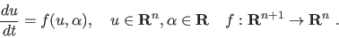
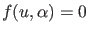
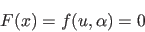
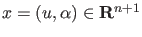
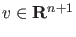

Next:
Initialization by time integration
Up:
Equilibrium continuation
Previous:
Equilibrium continuation
Contents
Mathematical definition
Consider a differential equation

(
33
)
We are interested in an equilibrium curve, i.e.

. The defining function is therefore:

(
34
)
with

. Denote by

the tangent vector to the equilibrium curve at
.